Volunteer protocol
The Snow Algae Atlas aims to map the distribution of snow algae worldwide using satellite imagery. Volunteers help us by hiking to predicted snow algae points to see whether our predictions are correct. Volunteers get a free 1-year Gaia GPS Premium membership.
Short Version
- Download predicted snow algae points from current imagery for your region
- Import points into Gaia GPS and share folder
- Hike to points and classify them as either “Algae” or “Other”
- Sync data
Long Version
First, sign up. You only need do this once.
1. Download predicted snow algae points
A few days before your trip, visit the Point Finder Google Earth Engine app. Try and do this immediately before your trip—ideally within a day or two before you leave, so you get the most recent satellite imagery (~weekly flyover).
(1a) Center the map around the area you plan to visit, and click ‘Get Points’.
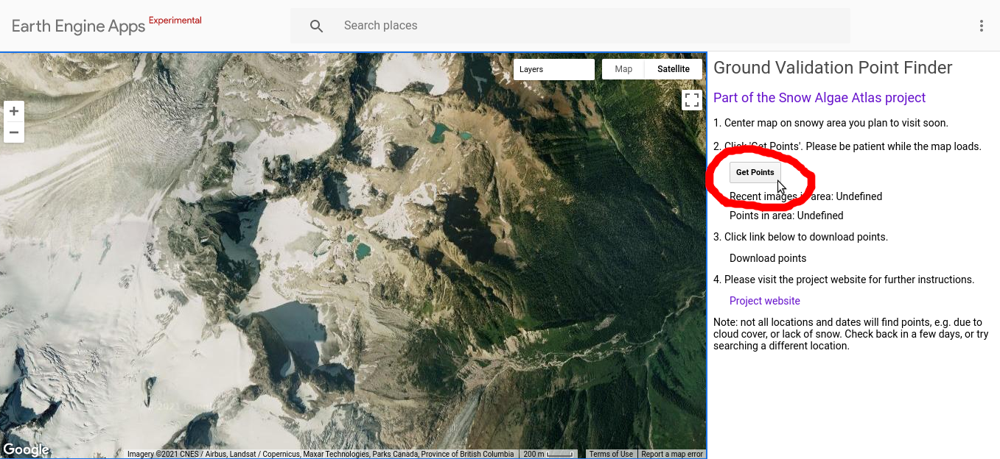
This searches your region for recent, cloud-free satellite imagery. If any is found, it searches that image for red snow, and applies machine learning to predict whether the red snow is snow algae or something else (e.g. mineral dust on snow surface). Red points are predicted snow algae, blue points are predicted “something else”.
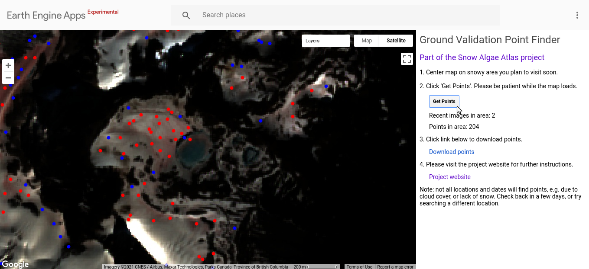
This may generate as many as several hundred points—we don’t expect you to visit them all! Visit as many as safely and reasonably possible. Even just one point provides us with valuable data. Between 10 and 20 is reasonable for a day trip. Ideally, we would like you to visit an even number of red and blue points–especially red points.
If no images or points appear, don’t give up! Try another region, or check back in a week or so to see if any new imagery is available.
(1b) Click ‘Download points link’ to download the points. A pop-up will ask you where to save them to.
2. Import points into Gaia GPS
Visit the Gaia GPS website. If this is your first time, click ‘Sign Up For Free’, and use the same email you used to sign up for the project. Note: it may take a few days after you sign up for us to activate your free Gaia Premium subscription.
(2a) Once you’ve logged into the Gaia GPS website, on the left menu click ‘Import Data’, then ‘Select Files’, then navigate to where you saved the points.
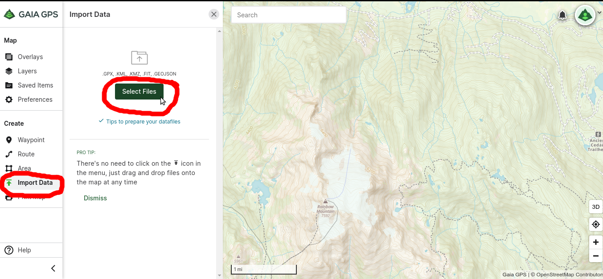
(2b) The points will pop up on the map. Click the green ‘Save __ items’ button to upload the points to Gaia Cloud. (Note: you may get a ‘Large file import’ warning message if your file contains many points. Click the box and click Import and proceed.)
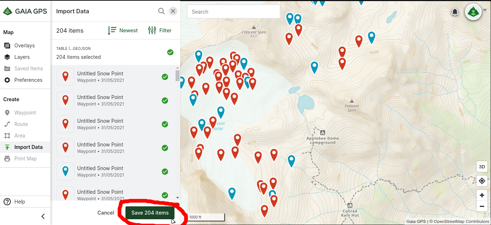
(2c) In the top right drop-down menu, navigate to ‘Folders’.
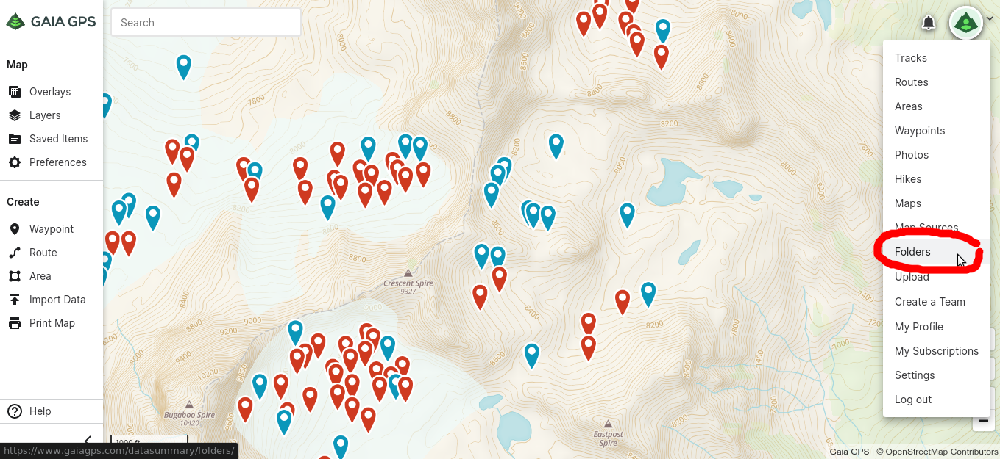
(2d) Your most recent upload should be at the top of the list (.geojson). Click on the title to view folder contents.
(2e) Scroll down to find the ‘Share This Folder’ options on the right panel. Enter my email casey.engstrom (at) gmail.com, and click the ‘Share’ button below.
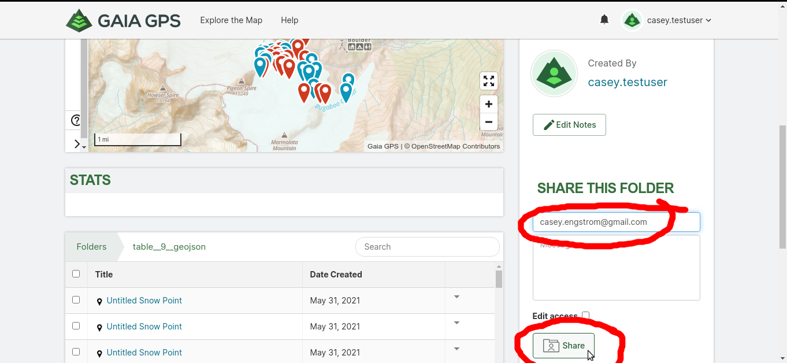
Important: Please share the folder as described above. Otherwise, we won’t be able to see the data you collect.
(2f) Check that the points have sync’d on your Gaia GPS smartphone app.
If this is your first time, download Gaia GPS from your smartphone app store, and log in using the same credentials you used for the Gaia GPS website.
In the Gaia phone app, navigate in the map to the region you plan to visit. Your points should appear same as on the Gaia website.
(2g) If the points don’t appear, check the account is set to automatically sync. In the bottom ‘Settings’ menu, click ‘Account’, make sure the slider for Sync With GaiaCloud is green. Click the grey box where it says Last Sync to force a sync now.
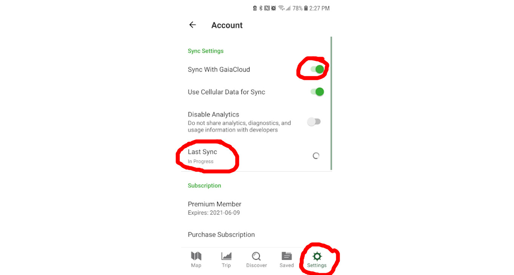
3. Hike to points and classify
If this is your first time, we reccommend downloading this page on your phone for reference in the field.
Visit points along your route using Gaia GPS blue-dot navigation. Exercise best judgement, do not visit a point if it feels unsafe for any reason! Try and visit an equal number or red and blue points– red points are in short supply.
Upon arrival to a point, have a look at the snow within a ~5 m radius of where you stand. Is the snow visibly pink? Or does it just look dirty?
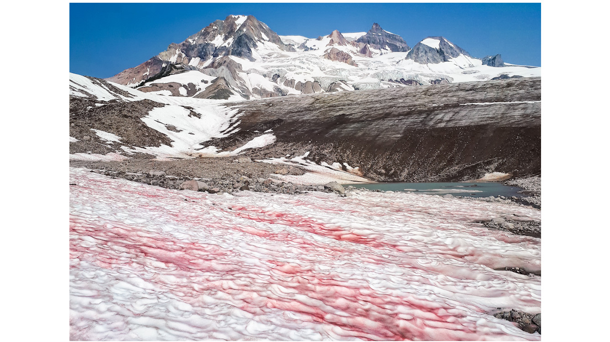
The bright pink stuff in the above photo is definitely snow algae.
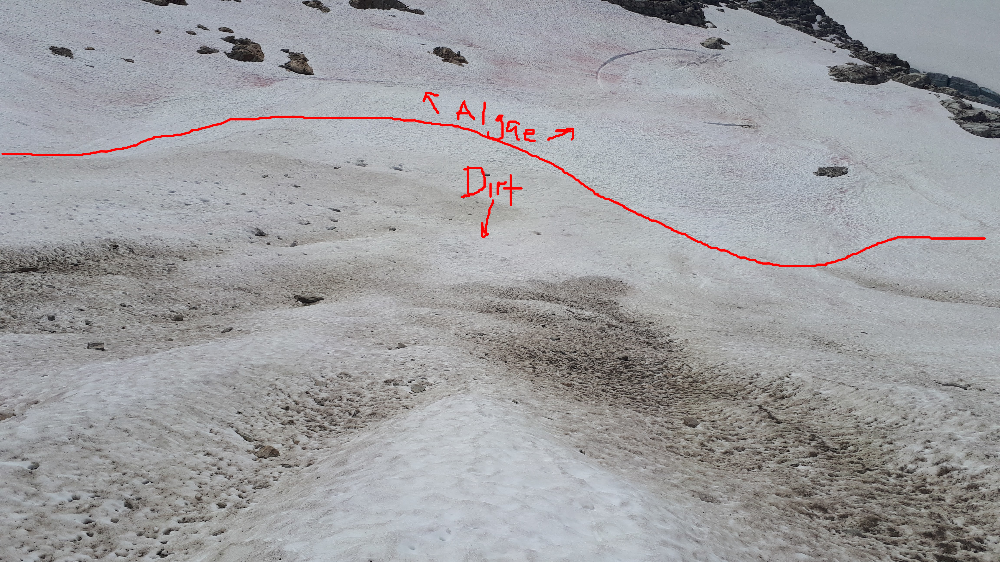
(3a) Click the point, then click the the little green (i) button to edit the point. Use camera button to enter photography mode. Take a photo that you think is representative of the nearby snow surface (see above for examples).
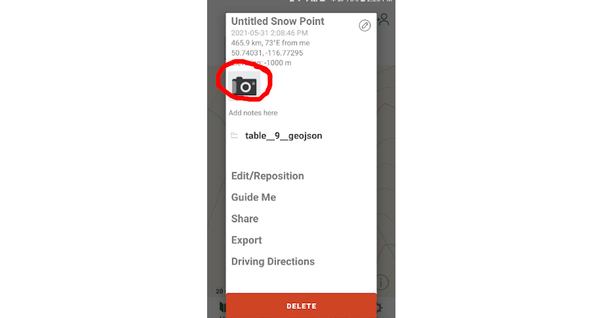
(3d) Once you have clicked “Use this photo”, a pop-up will ask you to title the photo. Write ‘Algae’ if the snow is predominantly pink snow algae, ‘Dirt’ if mostly dirt, ‘White’ if the snow is just white, or ‘Other’ if something else. You can also write ‘Mix’ if there is a mix of snow algae and dirt, or ‘Unsure’ if you don’t know. Optionally provide more details in the Notes section. Save.
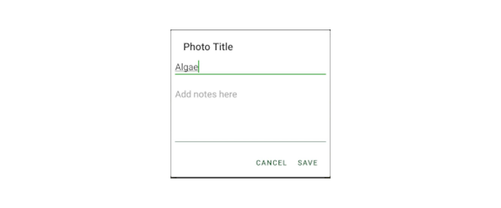
(3e) Navigate back to the map, and click on the point again (the little green (i) button) to make sure the photo and title are attached. You should see a photo thumbnail next to the camera button, and the title should appear at the top.
(3f) Repeat 3a - 3d to visit as many points as reasonably and safely possible.
Be aware of mountain hazards, and practice Leave No Trace. Remember, we don’t expect you to visit all points, likely many points will not be accessible! Even just one point provides us with valuable data, and between 10 and 20 is reasonable for a day trip. Again, if possible visit an even number of red and blue points—especially red points.
4. Sync data upon return
Visit gaiagps.com and click a few points to ensure that your data was properly sync’d.
If not, check the sync settings in your phone app. See (2g) above.
Thank you for participating, be safe, and have fun!
Casey Engstrom
PhD Candidate in Molecular Biology
Biologist and climber exploring the snow algae microbiome in the mountains